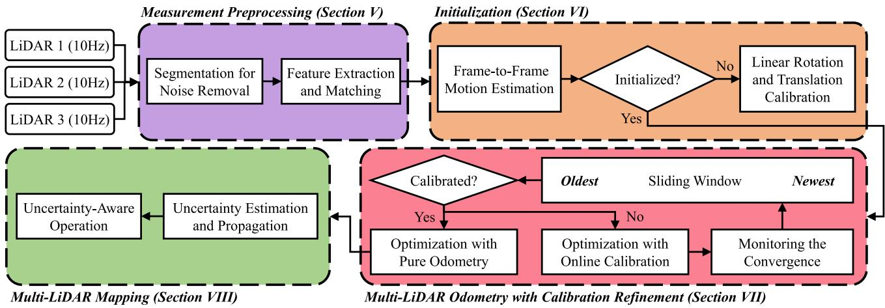
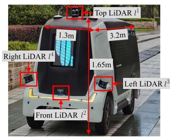
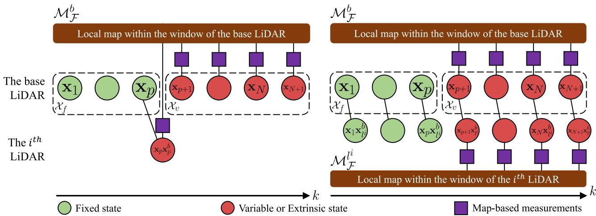
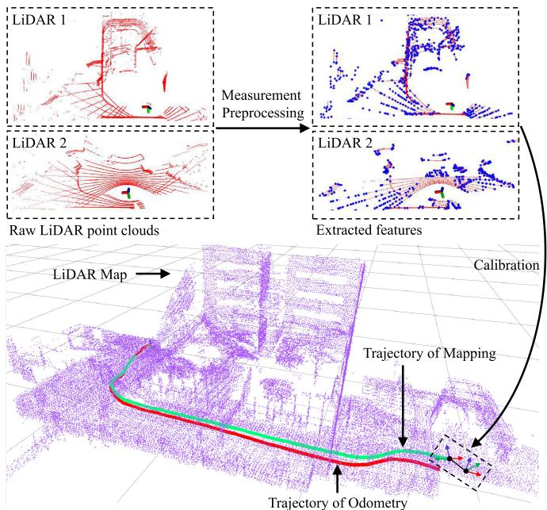
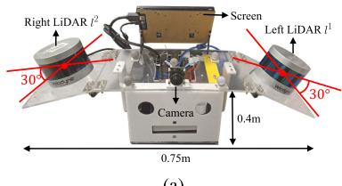

本节目标
读完你应该能：说清 M-LOAM 处理的是「多台同质激光雷达」而非异源融合；讲出手眼标定 AX=XB 与可观性条件；解释「为什么车要动起来才标得准」；并复述它对「视场不重叠」的诚实处理。
和前面课程怎么接
它把「外参当状态在线估」的思路，与第三季 0057（VINS-Mono 在线时偏 td）、第二季 0031/0032（时间偏移可联合优化）同源；紧耦合与退化因子呼应第一季 0006、第四季 0076；滑动窗口 MAP + Huber 核则是第二季 0018/0019、0021 的激光版。
1. 先澄清：这是「多台同种雷达」的标定，不是异源融合
本节是第五季收官，但首先要挡住一个容易掉进去的坑。
本季隐藏主题的一句点题
M-LOAM 处理的是多台同质激光雷达（multi-LiDAR，原文称 unimodel）之间的在线外参标定 + 里程计 + 建图。它不是「激光+视觉+惯性」的异源融合。原文 §II 明确把「多激光雷达融合（unimodel）」与「视觉/惯性多传感器融合（multimodal）」分开，并称前者「仍是开放问题」。
那为什么要把它放进「多传感器融合」这一季的最后？因为它揭示了一个贯穿全季的隐藏主题：融合系统真正的难点不在「怎么把数据合起来」，而在「先把传感器之间的关系弄清楚」。 异源融合要标的是「激光↔相机↔IMU」的相对位姿与时间差；M-LOAM 要标的是「雷达↔雷达」的相对位姿——底层数学是同一类：都把「传感器之间的未知关系」当成待估变量一起解。只不过未知数从 Δt（时间偏移）换成了 SE(3) 外参。
所以请记住它的真实身份：它解决的是「同类多传感器外参怎么在线标」，与本季前几节的异源融合目标不同，但方法论同宗。接第三季 0057 的话术是——「VINS-Mono 把相机-IMU 时间差 td 当变量在线估，M-LOAM 把这套『在线标定』搬到多雷达外参上，连收敛判据（λ）都给了」。
2. 核心贡献：外参怎么在线估，为什么车必须动起来
它想解决的问题很朴素：单台激光雷达有稀疏 + 垂直 FOV 有限的先天缺陷，在走廊、楼梯等无结构处会退化。多装几台能提升覆盖与密度，但多台之间的外参（相对位姿）怎么来？ 传统做法要人工、要对标定物。M-LOAM 要的是开机即不依赖标定板，自己边跑边标。
手眼标定：AX = XB
两台雷达各自记录自己的历史相对位姿（A、B），它们之间的外参 X 满足经典的手眼方程：
A、B 是两雷达各自走过的相对位姿，X（即外参 $R_{l^i}^b, t_{l^i}^b$）是待求量。这就是「鸡生蛋」的初始化来源——它不需要标定板，靠共同看到的同一物体 + 各自的运动轨迹反推。
可观性条件：为什么车要动、要转弯
旋转初始化把多时段堆叠成线性系统 $Q_K q_{l^i}^b=0$，其可观性判据是：
其中 $\sigma_R=0.25$（论文表 II 阈值）。翻译成人话：只有当机器人的运动足够丰富（尤其有旋转、有上下起伏）时，外参才是可被唯一确定的；若只在水平面上直滑，某些自由度（如平移 z）就「不可观」——你分不清「外参错了」还是「机器人位置猜错了」。原文假设 2 明确要求「平台在校准初始化期需充分旋转 + 平移」；平移初始化还因「平面运动下 z 平移不可观」而先设 $t_z=0$，留待精化阶段恢复。
怎么看这张图：① 灰色虚线是电线杆的真实位置；② 蓝色是前面雷达眼中的杆（偏左）、粉色是后面雷达眼中的杆（偏右），两者偏差就是外参误差；③ 红色双向箭头标出「错位」；④ 绿色虚线箭头表示系统把它当成未知量 X，随运动逐步优化掉。
要记住的一句话：「没有标定板，靠共同看到的同一根杆 + 各自轨迹反推外参」——这正是手眼方程 AX=XB 的几何直觉。
怎么看这张图：① 左格——车不动，两台雷达看的是同一批静止点，不管外参怎么猜，画面看起来都差不多，所以「外参错了」和「机器人位置猜错了」无法区分，这就是不可观；② 右格——车转弯时，两台雷达的运动轨迹旋转中心不同，于是外参一旦错了，两条轨迹就会矛盾，错误被暴露，于是可观。
要记住的一句话：「动得越丰富（尤其转弯、上下），外参才估得全」——这是 M-LOAM 要求充分旋转+平移的数学本质（σ_min2 > σ_R）。
3. 标定与里程计的鸡生蛋问题怎么解
「外参要靠运动估，但估运动（里程计）又需要先用外参把各雷达数据配到同一系」——这是典型的鸡生蛋。
M-LOAM 的解法是先初始化、再联合/交替优化，并按标定是否收敛切换两种模式：
- 阶段 1 初始化：用手眼方程 AX=XB 给外参一个粗值（旋转用四元数线性系统 + SVD，平移最小二乘）；
- 阶段 2 非线性精化：把外参放进滑动窗口，与位姿一起被联合优化，用退化因子 λ 判收敛；
- 阶段 3 纯里程计/建图：标定收敛后，外参被「锁死」成固定量，不再参与优化。
正文 Fig. 2 的框图把这条路径画得很清楚：预处理 → 初始化 → 带标定精化的滑动窗口多雷达里程计；按标定收敛分「在线标定 / 纯里程计」两路。这是「标定与里程计互相依赖」问题的工程化回答。

怎么看这张图：① 从预处理 → 初始化 → 带标定精化的滑动窗口里程计，是一条主链；② 关键分叉在「标定是否收敛」——收敛前外参是变量，收敛后外参固定；③ 这正对应上面说的「鸡生蛋」解决路径：先粗标定，再联合精化，最后锁死。
4. 视场不重叠的多雷达怎么处理（诚实说明）
这是个容易被误读的点，必须如实写。
原文假设 3 的真相
正文假设 3（p.144）明确要求「主雷达的局部地图应与辅助雷达共享重叠 FOV」，以便精化阶段特征匹配、缩短标定时间。也就是说：M-LOAM 在标定精化阶段依赖主-辅雷达 FOV 有重叠；它并没有提出一套「非重叠 FOV 专用标定法」。
但在纯里程计 / 建图阶段（公式 20、21），各雷达特征分别匹配到全局/局部地图，因此多雷达互补覆盖（消除车身盲区）仍直接提升位姿精度。论文的 RV 平台（车顶/前/左/右各一台 RS-16）就是「非重叠互补」的实例（Fig. 7）。
结论要分两句说，不能混：标定需要一定的 FOV 重叠来启动；运行阶段则受益于互补覆盖。 不加区分地说「它支持完全无重叠的多雷达」是夸大了。

怎么看这张图：① 四台雷达装在车四周，正是为了消除车身盲区（互补覆盖）；② (b) 是标定后四雷达点云拼成的一张干净地图；③ 这正是「运行阶段受益于互补覆盖」的实例，但别忘了标定精化本身仍要求主-辅 FOV 有重叠。
5. 因子图与优化结构
M-LOAM 把整个问题做成滑动窗口的最大后验估计（MAP）。总目标：
$\mathcal X$ 含固定态、变量态、外参三部分；外参随标定收敛与否在「在线标定」与「纯里程计」两子任务间切换。残差主要有两类（LOAM 系核心）：
| 残差 | 表达式要点 | 含义 |
|---|---|---|
| 点-面 | $a=\mathbf w^{\top}(\mathbf R_k\mathbf p+\mathbf t_k)+d$ | 点到平面的欧氏距离（[w,d] 平面系数） |
| 点-边 | 两个互相垂直的面残差组合 | 比 LOAM 标量残差信息更全（可乘 3×3 协方差） |
此外还有鲁棒核（Huber $\rho$）、外参相关的手眼残差，以及边缘化（Schur 补）——这正是第二季 0018/0019（BA、Schur、鲁棒核）与 0021（g2o）在激光侧的落地。Fig. 4 把滑动窗口图模型画得很清楚：左侧「在线标定」外参是变量、右侧「纯里程计」外参固定。

怎么看这张图：① 左图外参是变量（被优化），右图外参固定（锁死）；② 枢纽帧 p 是局部地图原点，窗口内变量态 + 外参一起优化；③ 这就是「标定收敛后关掉标定」的因子图表达。
怎么看这张图：① 左图两类激光雷达之间，只需要标定一个相对位姿 X（SE(3) 外参），因为数据同构；② 右图激光/相机/IMU 之间，除了相对位置，还要额外对齐时间差 Δt（时偏）——这正是第三季 0057 在线估 td 的那一类；③ M-LOAM 落在左边，本季前几节异源融合落在右边，但「把未知关系当状态一起估」是同一思路。
要记住的一句话：融合的「地基」工作量，随传感器种类增多而变重——不仅标位置，还要标时间。
6. 实验数字（逐条抄准）
把关键数字如实列出（§IX–XI）：
| 项目 | 数值 / 结论 |
|---|---|
| 平台与雷达 | 仿真 2×16 线；手持 RHD 2×VLP-16（2 m/s）；车 RV 4×RS-16（3 m/s）。总计 10 序列、4.60 km |
| 外参标定误差 | Proposed(Ini.+Ref.) 在 RHD 上 EGT_R < 3°、EGT_t < 0.07 m，与靶标法 PS-Calib 相当；Auto-Calib 误差大得多（EGT_R 达 33°–35°） |
| 标定收敛所需运动 | 初始化期需充分旋转+平移；σ_min2 > σ_R(=0.25)；平面运动下平移 z 不可观（先设 t_z=0）。未给单一「多少秒收敛」数字 |
| 里程计/建图精度 | 仿真 ATE RMSE <0.05 m / <1°；手持相对漂移 0.003%–0.07%（远优于 A-LO 的 14%–34%）；RV 上 RPE 中位数 (6.45°, 2.14%)，优于 A-LOAM (15.36°, 2.80%) |
| 速度 | 里程计 27±5 ms(1雷达)→73±9 ms(4雷达)；建图 78±11→126±15 ms；里程计 10 Hz、建图 5 Hz |
| 多雷达增益 | 3 m/s 下 1→4 雷达里程计 RPE 从 (56.53°,20.19%) 降到 (42.96°,15.73%) |

怎么看这张图：① 这是全流程一图概览：去噪提边(蓝)/面(红)特征 → 在线标定得外参 → 里程计与建图用特征估位姿；② 注意建图轨迹(绿)比里程计(红)更准——和 LOAM 的「两步分工」直觉一致；③ 它直观展示了「标定→里程计→建图」三者的上下游关系。
互动判断
M-LOAM 的外参标定，为什么要求机器人在初始化期「充分旋转 + 平移」？
7. 原文承认的局限
对高精地图（<0.01 m, 1°）不够完美；标定误差会比例传播到地图，即使建模了外参扰动也难完全消除。
高频转弯/运动时难以跟踪位姿；线性插值位姿无法表达平滑/快速运动，作者建议用 B-spline。
长隧道（所有平面近平行）会失败；且这类特征缺乏识别力，不足以做地点识别/重定位（不与 AdaFusion 打通）。
假设 3 要求主-辅雷达 FOV 有重叠以缩短标定；完全非重叠的极端布局未专门处理（运行阶段才靠互补覆盖受益）。
互动判断
关于「视场不重叠的多雷达」，下面哪句才是 M-LOAM 的诚实立场？

怎么看这张图：① (a) 是真实手持设备，左右各一台 VLP-16；② (b) 是左右雷达标定后合成的点云，干净对齐——这是「外参标对了」的肉眼证据；③ 注意左右雷达本就有重叠 FOV，符合假设 3 的标定启动条件。
8. 收官：第五季主线一览
第九节课，把整季的主线收一下。本季「多传感器融合」其实一直在回答一个问题：激光 + 视觉 + 惯性，到底怎么合成一台机器？ 四条主线贯穿始终：
两条线并行、末端合流（0096 R³LIVE：激光惯性出几何、视觉出纹理，最后由渲染拼到一起）vs 统一状态、统一地图（0099/0100 FAST-LIVO 系：同一份状态、同一个地图，视觉直接复用激光的几何）。
点云 → TSDF → 体素块 → 增量 k-d 树 → 平面（0100）→ 高斯（0098）。这是本项目最长的一条线索，本季把它推到了「地图本身就是一串可渲染的高斯」。
0097 辐射重建、0098 可渲染地图——「融合出来的地图」第一次能直接渲染出新视角下的图像，把建图与渲染合成一件事。
时间同步、外参标定、退化应对（0102/0103）。本季最后两节揭示：融合真正的难点不在「怎么把数据合起来」，而在「先把传感器之间的关系弄清楚」。
本季 9 节对照表
| 课号 | 系统 | 传感器组合 | 融合方式 | 输出 | 实时 |
|---|---|---|---|---|---|
| 0095 | 第五季开场（导览） | 全季总览 | — | 主线概览 | 否（导览） |
| 0096 | R³LIVE | 激光+视觉+惯性 | 松（两线并行，末端渲染合流） | 着色点云 | 实时 |
| 0097 | 辐射重建 | 激光+视觉 | （见原课） | 可渲染辐射场 | 实时 |
| 0098 | LIV-GaussMap | 激光+视觉 | 紧耦合 | 高斯地图（可直接渲染） | 实时 |
| 0099/0100 | FAST-LIVO 系 | 激光+视觉 | 紧耦合（统一状态/地图） | 体素平面/点云 | 实时 |
| 0101 | 紧耦合的另一条路 | 激光+视觉（无 IMU） | 紧耦合（因子图） | （见原课） | 实时 |
| 0102 | 平台与评测（本课） | 识别 + 基准 | 非里程计 / 基准 | 描述子 / ATE 表 | 否（评测） |
| 0103 | 多激光雷达 M-LOAM（本课） | 多同质激光 | 紧耦合 | 点云地图 | 实时 |
注：0099 与 0100 同属 FAST-LIVO 系，合并为一行；0095 为第五季开场导览课，未列具体传感器组合。
课后练习
- 为什么说 M-LOAM「不是异源融合」？它和本季前几节的融合系统，底层又有什么相同之处？
展开查看答案
原文 §II 把「多激光雷达融合（unimodel）」与「视觉/惯性多传感器融合（multimodal）」分开，称前者仍是开放问题——M-LOAM 落在前者，处理的是多台同质激光雷达的外参标定+里程计+建图，不是「激光+视觉+惯性」。相同之处在于：它和异源融合都把「传感器之间的未知关系」当成待估变量一起解——异源融合估时间差 Δt 与跨模态外参，M-LOAM 估雷达间 SE(3) 外参，方法论同宗。
- 写出手眼方程 AX=XB 的含义，并解释为什么「机器人只在水平面直滑」会让外参不可观。
展开查看答案
A、B 是两雷达各自走过的相对位姿，X 是它们之间的外参（旋转+平移）。方程意思是「先转外参再走相对位姿」与「先走相对位姿再转外参」应一致。若只在水平面直滑，平移的 z 分量没有激励，信息矩阵对应自由度接近零——此时「外参的 z 错了」与「机器人高度猜错了」在观测上无法区分，即不可观。可观性判据要求 σ_min2 > σ_R(=0.25)，需要充分旋转+平移（尤其转弯、上下）。
- M-LOAM 怎么解决「标定与里程计互相依赖」的鸡生蛋问题？
展开查看答案
分三阶段：① 初始化用手眼方程给外参粗值（旋转 SVD、平移最小二乘）；② 非线性精化把外参放进滑动窗口与位姿联合优化，用退化因子 λ 判收敛；③ 纯里程计/建图——标定收敛后外参锁死成固定量。即「先粗标定 → 联合精化 → 锁死」，而不是一步到位。
- 关于「视场不重叠的多雷达」，M-LOAM 的诚实立场是什么？请分两句说。
展开查看答案
第一句：标定精化阶段依赖主-辅雷达 FOV 有重叠（假设 3），它没提出一套完全无重叠的专用标定法；第二句：运行阶段各雷达特征分别匹配地图，多雷达互补覆盖（消除车身盲区）仍直接提升位姿精度——RV 四雷达就是实例。两句不能混为一谈，否则就是夸大。